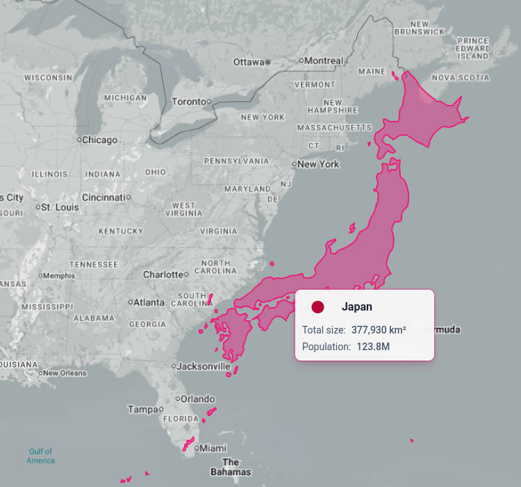

Click pictures for zoomed in version

| Region |
Land Area (km²) |
Land Area (mi²) |
Population (approx) |
Population Density (per km²) |
Car Ownership per Household |
Average Household Size (people) |
| 🇯🇵 Japan |
377,975 |
145,937 |
~124 million |
~328 |
~1.0 cars/household |
~2.25 |
| 🇺🇸 U.S. East Coast |
~769,000 |
~297,000 |
~118 million |
~153 |
~0.9 cars/household |
~2.55 |
For this trip the focus is on Koga. We did spend a day in Tokyo.
Originally I was going to look at fashion in Ikebukuro and technology in Akihabara, but I wanted to get to Koga fast to see friends and learn more Japanese.
So far I have learned very little Japanese but am meeting very many people.
UPDATE 12/5: I have enabled compression so they will load faster but considerably less quality. I may reverse this decision in the future however you can request any high resolution video or picture from me
Tokyo 1
Tokyo, first few days
Fukuoka
Shinkansen from Tokyo to Hakata then to Koga including following days
Matsuri Koga and Sunlive
Hard.Off walking and the incredible sounds of Mr. Max Supermart(added 11/20)
Rurururu るるるる and big resale shop
Hakata, Tenjin, Christmas, street ramen
Walk to Aeon Mall
Hiroshima
Hiroshima and two art galleries 11/23
(above posted on 11/24)
Kanazawa
Day 1
Kanazawa Day 2
(above posted on 11/25)
After today I learned that the new update on my camera phone added two more video stabilizers. I had previously disabled automatic stabilization but there was two more settings hiding, (maybe more who knows) after today and maybe for a few more days I disabled these stabilizers which, in my opinion, ruin the videos. Please ignore and do not watch if you can get motion sickness.
Kanazawa to Hakata 11/26
Fukuoka
Koga and Sunlive part 1 11/27
Info and Beech 11/28
Local day and small maker market 11/29 and 11/30
Tachibana Mountain and such 12/2
Aeon mall again 12/3
Kumamoto + Mr Aso
Kumamoto Castle (first half) 12/4
Aso Caldera and Volcano (second half of day) 12/4
(11/26 until 12/4 posted on 12/5 Japan time)
Fukuoka
December 5th and 6th, Concert and Candle festival
Some noodles and Tenjin again (introducing Yamamoto Bumpodo, an art supplies store)
Mini Trip and Things Dec 9-11
Tsushima
Tsushima Day 1: The Hotel Dec 12
Tsushima Day 2: The descent Dec 13
Tsushima Day 3: Resolution Dec 14
(above posted 12/15/2025)
Fukuoka
Miyajidake (and Hakata) December 18th
Hiroshima Mitake Temple December 19th
Itoshima Kofun Himikoteien (keyhole garden) December 20th
Dairiki and State Liquor Store December 21st(postedon 12/28)
Hakata again December 22nd(updated 12/28)
Leading up to and Christmas Eve December 23rd and 24th
Christmas Day
Day after Christmas (Above posted on December 27th, sorry about long time)
Mushirouchi Kumano-jinja and around Koga December 27th
Amora Shrine and Amazing Indian style curry December 28th(updated 12/28
Nagasaki
Nagasaki 1: Peace Park, Urakami Cathedral, and Hypocenter December 29th
Nagasaki 2: Sanno Shrine, International Cemetery, and Nishizaka Park December 29th
Nagasaki 3: Walk to Meganebashi, China Town, and Oura Cathedral December 29th(posted 01/01/2026)
At this point I am home now for almost two weeks. I apologize to anyone who was waiting, but here are the rest of the photos that I took during the trip. I am compiling a separate album of photos OTHERS took that will be at the end. Em still has to compile her's and make a sharable album.
Nagasaki 4: Last little bit Dec 30
Outro
New Years I think at Keiun-ji and surrounding days Dec 31-Jan 2
Dazaifu Jan 3rd-4th
Edo-Tokyo Open Air Museum Jan 6th
Going to Toyko on the 5th and the rest of January 6th
Last two days and home again Jan 7 + 8

{kind=link}